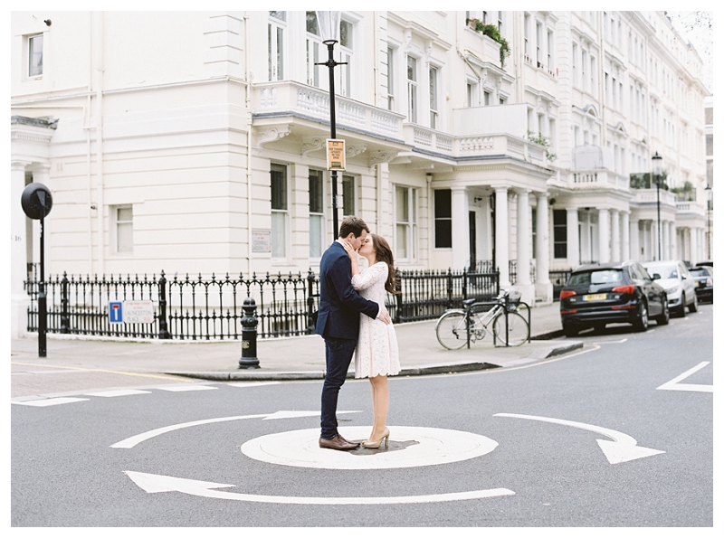

Engagements
Best tips for beautiful Engagement Photos
15 October 2016

Since we’re now in the peak of engagement season, I thought I’d share some of my favorite tips for getting beautiful engagement photos alongside a recent session that was featured in Style Me Pretty. Engagement photos are SO important and it’s hard to believe that anyone would consider skipping out on an engagement sesh if they knew just how valuable they are in preparing for wedding photos–essentially providing a ‘practice round’
for you and your photographer. During your engagement session you will get to know your photographer, they way they work, and begin getting comfortable in front of the camera. It will allow your photographer to get a sense of which angles work best for you, what you like and don’t like, and how you engage as a couple.
All of this is pretty much guaranteed to result in better wedding photos. And the bonus is that if you schedule your session early enough you can use an image for your save-the-dates! Win win. So without further ado here are my top 5 tips:
1. If you are planning oh having a hair and makeup trial before the wedding, schedule it prior to your engagement photography session. You will look extra gorgeous for the photos and feel great about knowing how your look comes across on camera.
2. Choose wardrobe carefully! Nothing will set the tone of your images more than your wardrobe and location (see below for that!) so it’s really important to get this one right. There are a number of things to consider here so in no particular order here goes: –Dress up! You are going to have these images forever and the more polished you look, the more polished your images will be.
–Choose coordinated but not matching. You obvioulsy don’t want to clash, but you also don’t want to look like twinsies! (awkward…) This should be easy since there are only two of you, so try to choose colors and items that are complimentary. Some photographers have pinterst boards with suggestions– Feel free to email me if you want to see mine!
–Avoid jeans, anything with strong graphics/wording/etc. –Items with texture and layers photograph beautifully –Make sure you select items that emphasize the bits of yourself that you love, and minimize anything you are self conscious about. If you have great legs, show them off! If you feel self conscious about your arms, steer clear of that sleeveless number! And so on, and so forth. I hope you get my drift :)
3. Ask for direction if you need it (and make sure you choose a photographer who knows how to give it, if necessary). I chose my own wedding photographer soley based on her portfolio of beautiful images. Unfortunately, what I didn’t know at the time is that my husband and I are very awkward in front of the camera (nothing like the effortless models that graced her pages), and that she wasn’t comfortable giving direction.
She basically said do whatever you want to do which left both of us feeling weird and unsure of how we looked and whether we were doing things ‘right’. This is probably something you should discuss with your photographer prior to booking them for the wedding. Ask them how they normally work with people who are shy, and whether they have experience and are comfortable giving a good amount of direction (if necessary).
4. Choose location wisely. Similar to wardrobe, the ‘vibe’ where your location will flavor the images. When choosing a location here are some things to consider: –Are there any places that are special to you or that tell a bit of your story? –How do the wardrobes fit into the scene? (for example it might look weird to be in formal wear while shooting in a super grungy setting) –Is the area likely to be busy given the time of day you have chosen to shoot?
The more people there are, the more difficult it will be to get a clean shot. –Consider the light in the location given the time you will begin. Talk to your photographer about this if you aren’t sure! If you need help choosing a London location, let me know. I know all of the best spots!
5. Relax and enjoy each other! One of the best ways to make sure you end up with great images is to ensure that your focus is kept on your partner during the session. There may definitely be a time and place for you to direct your attention to the camera as well, but for the most part you want to be interacting with your partner so that your photographer is capturing authentic moments. Use this time to connect and play, and pretend your photographer isn’t there!
Feel free to email me if you would like to discuss scheduling your own engagement photos!